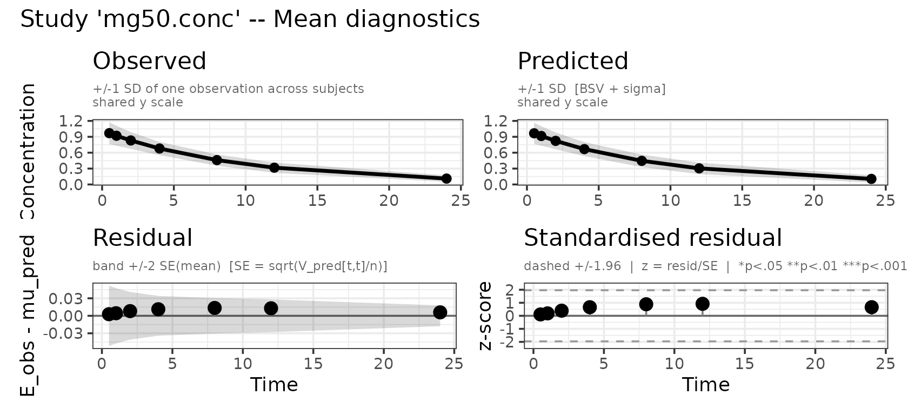
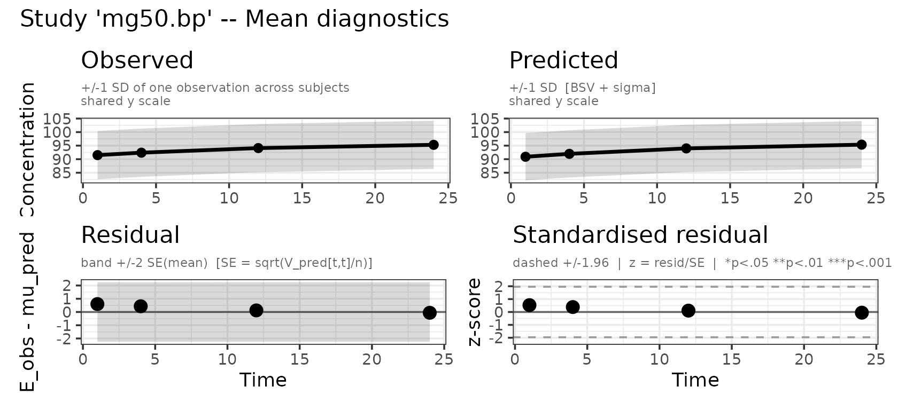
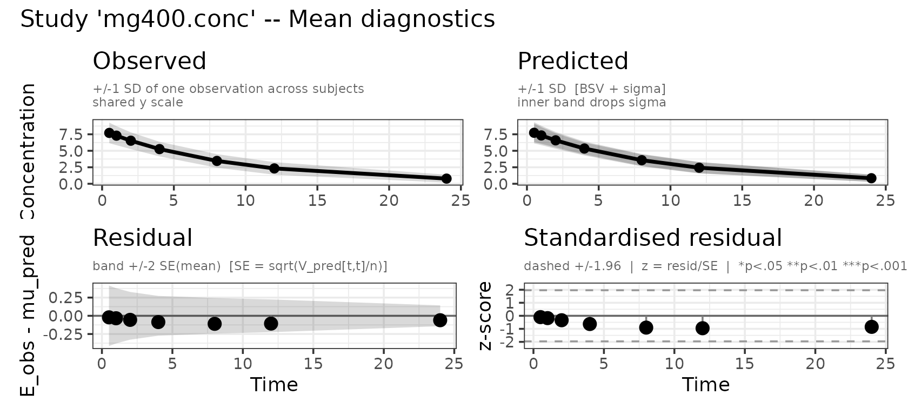
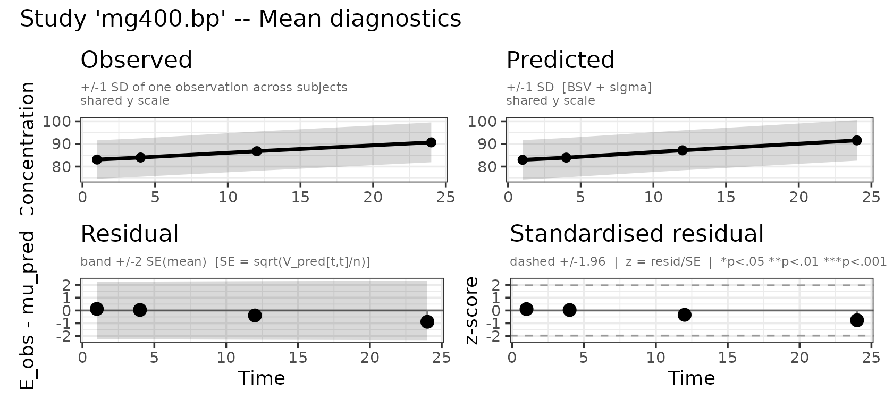
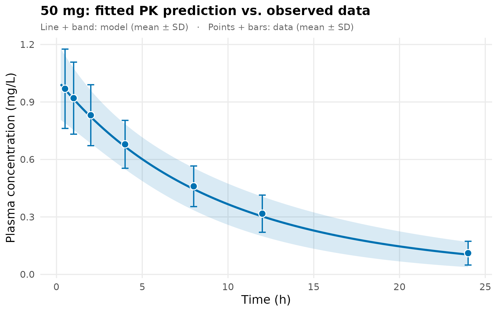
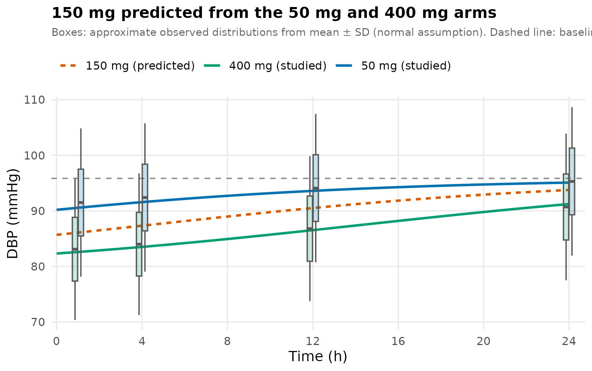

The problem
A blood-pressure trial reports two doses, 50 mg and 400 mg. You are choosing the dose for the next study and you want 150 mg, which nobody measured. This vignette fits a PK/PD model to the two published arms and predicts the arm that was never run.
The data
Two arms, 60 subjects each, reporting a plasma concentration–time curve and a diastolic blood pressure (DBP) curve. Concentrations at seven times, DBP at four: PD is usually measured more sparsely than PK, and the two need not share a grid.
pk_times <- c(0.5, 1, 2, 4, 8, 12, 24)
pd_times <- c(1, 4, 12, 24)
# 50 mg arm
conc50_mean <- c(0.969, 0.920, 0.831, 0.679, 0.460, 0.317, 0.111) # mg/L
conc50_sd <- c(0.207, 0.188, 0.159, 0.125, 0.106, 0.097, 0.062)
dbp50_mean <- c(91.5, 92.4, 94.1, 95.3) # mmHg
dbp50_sd <- c( 8.9, 8.9, 8.9, 8.9)
# 400 mg arm
conc400_mean <- c(7.709, 7.291, 6.528, 5.256, 3.462, 2.326, 0.780)
conc400_sd <- c(1.557, 1.440, 1.270, 1.106, 1.027, 0.951, 0.599)
dbp400_mean <- c(83.1, 84.0, 86.8, 90.7)
dbp400_sd <- c( 8.5, 8.5, 8.7, 8.8)Both arms are simulated from a known model — CL = 5 L/h, V = 50 L, baseline DBP = 95 mmHg, Emax = 15 mmHg, EC50 = 2 mg/L — so the 150 mg prediction can be checked against a truth at the end. Being a sample rather than the population, the numbers carry the scatter any 60-subject trial would. A digitised figure gives you exactly these fields.
By 24 h the 50 mg arm is back at baseline with the drug almost gone (0.1 mg/L), while the 400 mg arm is still about 4 mmHg below it. The DBP standard deviations barely move across time, the spread being dominated by between-subject differences in baseline blood pressure — the same people at every visit.
These are standard deviations. Published figures often plot a standard error or a model-based least-squares-mean SE, which must be converted first; see From a published figure to E, V and n.
The model
One compartment with a direct-effect Emax term that
lowers DBP. Two observed outputs make it a multiple-endpoint
model, carrying a residual error term for each, as in Several observed compartments:
pkpd_model <- function() {
ini({
tcl <- log(4) ; label("Log clearance (L/h)")
tv <- log(40) ; label("Log volume (L)")
te0 <- log(90) ; label("Log baseline DBP (mmHg)")
temax <- log(10) ; label("Log maximum DBP reduction (mmHg)")
tec50 <- log(1) ; label("Log EC50 (mg/L)")
prop.cp <- 0.1 ; label("Proportional residual error, concentration")
add.dbp <- 3 ; label("Additive residual error, DBP (mmHg)")
eta.cl ~ 0.09
eta.v ~ 0.04
eta.e0 ~ 0.007
})
model({
cl <- exp(tcl + eta.cl)
v <- exp(tv + eta.v)
e0 <- exp(te0 + eta.e0) # baseline DBP
emax <- exp(temax)
ec50 <- exp(tec50)
d/dt(central) <- -(cl/v) * central
cp <- central / v # output 1: concentration
dbp <- e0 - emax * cp / (ec50 + cp) # output 2: DBP (drug lowers it)
cp ~ prop(prop.cp)
dbp ~ add(add.dbp)
})
}A few points to note:
- Each output carries its own residual error term
(
prop.cp,add.dbp) — ordinary nlmixr2 multiple-endpoint syntax. -
e0is the baseline. With no pre-dose DBP observation it is identified by extrapolating the Emax curve to zero concentration, and the 50 mg arm’s 24 h point — where the drug contributes about 5% ofemax— is what keeps that extrapolation short. A pre-dose observation or a placebo arm is the robust way to pin a baseline; without one,e0andemaxtrade off. - The minus sign is because the drug lowers DBP, so
emaxis the maximum reduction, in mmHg. -
emaxandec50carry noeta: DBP SDs nearly flat across time and dose say little about PD-parameter IIV, andeta.e0already reproduces the spread.
Assembling the study specification
One observations entry per output, naming the model
variable it corresponds to and its own times,
E and V:
study50 <- list(
n = 60L, ev = rxode2::et(amt = 50, cmt = "central"),
observations = list(
conc = list(output = "cp", times = pk_times, E = conc50_mean, V = conc50_sd^2),
bp = list(output = "dbp", times = pd_times, E = dbp50_mean, V = dbp50_sd^2)
))
study400 <- list(
n = 60L, ev = rxode2::et(amt = 400, cmt = "central"),
observations = list(
conc = list(output = "cp", times = pk_times, E = conc400_mean, V = conc400_sd^2),
bp = list(output = "dbp", times = pd_times, E = dbp400_mean, V = dbp400_sd^2)
))Fitting
admData() builds the placeholder data frame nlmixr2’s
interface expects, and takes the names of the observed outputs — the
observations themselves live in the control, not the data argument.
Otherwise an ordinary admixr2 fit:
fit <- nlmixr2(pkpd_model, admData(c("cp", "dbp")), est = "adgh",
control = adghControl(studies = list(mg50 = study50,
mg400 = study400)))
fit
── nlmixr² adgh ──
OBJF AIC BIC Log-likelihood
adgh 1749.121 1769.121 1820.975 -874.5605
── Time (sec fit$time): ──
optimize covariance other elapsed other
elapsed 1.335 0.648 0 1.983 3.959
── Population Parameters (fit$parFixed or fit$parFixedDf): ──
Parameter Est. SE %RSE
tcl Log clearance (L/h) 1.595 0.02851 1.788
tv Log volume (L) 3.910 0.01830 0.4682
te0 Log baseline DBP (mmHg) 4.563 0.01338 0.2932
temax Log maximum DBP reduction (mmHg) 2.826 0.1386 4.903
tec50 Log EC50 (mg/L) 0.6864 0.1757 25.60
prop.cp Proportional residual error, concentration 0.09973 0.02013 20.18
add.dbp Additive residual error, DBP (mmHg) 3.012 1.541 51.17
Back-transformed(95%CI) BSV(CV%) Shrink(SD)%
tcl 4.927 (4.659, 5.210) 30.46 NaN
tv 49.89 (48.14, 51.72) 19.15 NaN
te0 95.85 (93.37, 98.40) 8.498 NaN
temax 16.88 (12.87, 22.15)
tec50 1.986 (1.408, 2.803)
prop.cp 0.09973 (0.06028, 0.1392)
add.dbp 3.012 (-0.008698, 6.034)
Covariance Type (fit$covMethod): r,s
Some strong fixed parameter correlations exist (fit$cor) :
cor:tv,tcl cor:te0,tcl cor:temax,tcl cor:tec50,tcl
-0.0159 -0.0840 -0.104 -0.102
cor:prop.cp,tcl cor:add.dbp,tcl cor:te0,tv cor:temax,tv
-0.0639 0.0282 0.0665 0.0825
cor:tec50,tv cor:prop.cp,tv cor:add.dbp,tv cor:temax,te0
-0.0408 -0.0552 -0.0227 0.707
cor:tec50,te0 cor:prop.cp,te0 cor:add.dbp,te0 cor:tec50,temax
-0.379 0.00817 -0.119 0.00645
cor:prop.cp,temax cor:add.dbp,temax cor:prop.cp,tec50 cor:add.dbp,tec50
0.0103 -0.166 0.00670 0.0752
cor:add.dbp,prop.cp
-0.00291
No correlations in between subject variability (BSV) matrix
Full BSV covariance (fit$omega) or correlation (fit$omegaR; diagonals=SDs)
Distribution stats (mean/skewness/kurtosis/p-value) available in fit$shrink
Information about run found (fit$runInfo):
• covMethod = "r,s": the Hessian is ill-conditioned (rcond 4.4e-05, cond 2.27e+04), and the sandwich inverts it twice where "r" inverts it once -- so the correction is amplified quadratically in the weakly-identified direction, which loads mainly on `add.dbp`. Check that parameter's relative standard error before reading its "r,s" value as a finding; the well-determined parameters are unaffected.
• adghCalcCov: the full Hessian including omega was not positive definite or was numerically singular; reporting structural and sigma standard errors only.
Censoring (fit$censInformation): No censoring
Minimization message (fit$message):
NLOPT_FTOL_REACHED: Optimization stopped because ftol_rel or ftol_abs (above) was reached. plot() returns one observed-vs-predicted panel per
observed output:
plot(fit, which = "mean")



PK model against data
As in Several observed
compartments, the line and band show the fitted population mean ±
SD. Points and error bars show the published concentration summaries.
The band includes between-subject variation from cl and
v, but excludes residual error.
theta_pk <- fit$theta
omega_pk <- fit$omega[c("eta.cl", "eta.v"), c("eta.cl", "eta.v"), drop = FALSE]
pk_sim <- rxode2::rxSolve(rxode2::rxode2({
cl <- exp(tcl + eta.cl); v <- exp(tv + eta.v)
d/dt(central) <- -(cl/v) * central
cp <- central / v
}), params = theta_pk[c("tcl", "tv")], omega = omega_pk,
nSub = 1000L,
events = rxode2::et(amt = 50, cmt = "central") |>
rxode2::et(seq(0.25, 24, by = 0.25)), returnType = "data.frame")
pk_band <- data.frame(
time = sort(unique(pk_sim$time)),
mean = as.vector(tapply(pk_sim$cp, pk_sim$time, mean)),
sd = as.vector(tapply(pk_sim$cp, pk_sim$time, sd)))
pk_obs <- data.frame(time = pk_times, mean = conc50_mean, sd = conc50_sd)
ggplot() +
geom_ribbon(data = pk_band,
aes(time, ymin = mean - sd, ymax = mean + sd),
fill = "#0072B2", alpha = 0.15) +
geom_line(data = pk_band, aes(time, mean), colour = "#0072B2", linewidth = 1) +
geom_errorbar(data = pk_obs,
aes(time, ymin = mean - sd, ymax = mean + sd),
colour = "#0072B2", width = 0.4, linewidth = 0.6) +
geom_point(data = pk_obs, aes(time, mean), shape = 21,
fill = "#0072B2", colour = "white", size = 3, stroke = 0.7) +
labs(x = "Time (h)", y = "Plasma concentration (mg/L)",
title = "50 mg: fitted PK prediction vs. observed data",
subtitle = "Line + band: model (mean ± SD) · Points + bars: data (mean ± SD)") +
theme_minimal(base_size = 12) +
theme(plot.title = element_text(face = "bold", size = 13),
plot.subtitle = element_text(colour = "grey40", size = 9),
panel.grid.minor = element_blank())
Predicting an unstudied dose
The fit gives both things the question needs: how a dose becomes a
concentration over time (cl, v), and how
concentration becomes an effect (emax, ec50).
Here both are closed form — a bolus decays exponentially and the effect
follows instantly:
theta <- fit$theta
cl <- exp(theta[["tcl"]]); v <- exp(theta[["tv"]])
e0 <- exp(theta[["te0"]]); emax <- exp(theta[["temax"]])
ec50 <- exp(theta[["tec50"]])
conc <- function(dose, t) (dose / v) * exp(-(cl / v) * t)
drop <- function(dose, t) { cc <- conc(dose, t); emax * cc / (ec50 + cc) }
# DBP reduction at 1 h, the first sampled PD time
round(c(mg50 = drop(50, 1), mg150 = drop(150, 1), mg400 = drop(400, 1)), 1)
#> mg50 mg150 mg400
#> 5.3 9.8 13.3At the first sampled time the model puts 150 mg at 9.8 mmHg below baseline, against 5.3 mmHg for 50 mg and 13.3 mmHg for 400 mg. The two studied arms are the check: the model’s DBP at 1 h is 90.6 and 82.6 mmHg against the observed 91.5 and 83.1, so the prediction sits on data rather than beside it.
Naive linear interpolation in dose would put 150 mg at 7.6 mmHg. The curve gives more, the response already flattening: 150 mg buys much of what 400 mg does.
The whole predicted time course follows, laid over the arms that were measured:
tt <- seq(0, 24, length.out = 200)
pred <- rbind(
data.frame(t = tt, dbp = e0 - drop( 50, tt), arm = "50 mg (studied)"),
data.frame(t = tt, dbp = e0 - drop(150, tt), arm = "150 mg (predicted)"),
data.frame(t = tt, dbp = e0 - drop(400, tt), arm = "400 mg (studied)"))
obs <- rbind(
data.frame(t = pd_times, dbp = dbp50_mean, sd = dbp50_sd, arm = "50 mg (studied)"),
data.frame(t = pd_times, dbp = dbp400_mean, sd = dbp400_sd, arm = "400 mg (studied)"))
pal <- c("50 mg (studied)" = "#0072B2",
"150 mg (predicted)" = "#D55E00",
"400 mg (studied)" = "#009E73")
ggplot(pred, aes(t, dbp, colour = arm)) +
geom_hline(yintercept = e0, linetype = "dashed", colour = "grey55") +
geom_line(aes(linetype = arm), linewidth = 1) +
geom_boxplot(data = transform(obs, ymin = dbp - 1.5 * sd,
lower = dbp - qnorm(.75) * sd,
middle = dbp,
upper = dbp + qnorm(.75) * sd,
ymax = dbp + 1.5 * sd),
aes(x = t, ymin = ymin, lower = lower, middle = middle,
upper = upper, ymax = ymax, fill = arm,
group = interaction(arm, t)),
stat = "identity", width = 0.55, alpha = 0.22,
colour = "grey35", inherit.aes = FALSE, show.legend = FALSE) +
scale_colour_manual(values = pal) +
scale_fill_manual(values = pal) +
scale_linetype_manual(values = c("50 mg (studied)" = "solid",
"150 mg (predicted)" = "22",
"400 mg (studied)" = "solid")) +
scale_x_continuous(breaks = seq(0, 24, 4),
expand = expansion(mult = c(0.01, 0.02))) +
labs(x = "Time (h)", y = "DBP (mmHg)", colour = NULL, linetype = NULL,
title = "150 mg predicted from the 50 mg and 400 mg arms",
subtitle = "Boxes: approximate observed distributions from mean ± SD (normal assumption). Dashed line: baseline.") +
theme_minimal(base_size = 12) +
theme(legend.position = "top", legend.justification = "left",
plot.title = element_text(face = "bold", size = 13),
plot.subtitle = element_text(colour = "grey40", size = 9,
margin = margin(b = 9)),
panel.grid.minor = element_blank())
Because the data were simulated, the answer is known. The truth was
Emax = 15 mmHg and EC50 = 2 mg/L; the fit
gives 16.9 and 1.99. At 1 h the true 150 mg drop is 8.6 mmHg against the
predicted 9.8 — an overshoot of about 13%. That is what sixty subjects
and two dose levels buy: the right shape and a usable dose, not a
precise Emax.
A few points to note:
-
This is a typical subject, not a population mean.
drop()usesexp(theta), i.e. η = 0, whereas the estimator matchedEto a population mean — and the mean of a nonlinear function is not that function at the mean. The two agree to about 0.01 mmHg here, the median-to-mean shift and the curvature nearly cancelling ateta.v ~ 0.04. The gap grows with IIV and would matter ifemaxorec50carried aneta. For a population mean, simulate over the estimatedOmega. -
Each arm sweeps a range of concentrations as the
drug clears, which is why one arm carries more than a static
dose–response intuition suggests: 400 mg alone spans 0.4–4 ×
EC50and largely identifiesemaxandec50. -
The 50 mg arm’s job is the baseline. With 400 mg
alone the lowest observed concentration is still ~29% of
emax, so the drug-free state is never approached ande0andemaxtrade off. The 50 mg arm’s 24 h point is the only near-drug-free observation there is. -
Check before predicting.
ec50comes back at 26% RSE — identified but not precise, and a dose prediction inherits that. Atemax/tec50correlation near ±1 would mean the two are trading off and the plateau is not identified at all:
Notes
- Getting E and V from a paper. Error bars are not always SDs; see From a published figure to E, V and n.
-
Which estimators.
adgh(used here),adfoandadmcsupport several observed outputs;adirmcerrors on multi-output models. See the estimator comparison. -
Same-subject PK and PD. Concentration and DBP are
independent likelihood blocks here, as they would be from two figures.
Measured in the same subjects — usually the case in a PK/PD study — they
are correlated, and a joint fit with zero cross-covariance is not two
independent blocks. Supply the cross-covariance; see
?admControland Several observed compartments. -
Delayed effects.
dbpresponds tocpinstantly, which is what makes the prediction a formula. If the effect lags, use an effect compartment or a turnover model and simulate instead. -
Placebo arms. With only active arms, drug effect
and the disease’s natural time course are confounded. A placebo arm is
just another study with a zero-amount
ev. -
Bounded endpoints. An additive residual can predict
outside a bounded score’s range. Transform instead —
logitNorm(),probitNorm(),boxCox()andyeoJohnson(), lambda estimated or fixed. See Choosing a residual error model.
See also
- Several observed compartments — multiple outputs and joint fits
- Multiple studies — meta-analysis across studies
- From a published figure to E, V and n